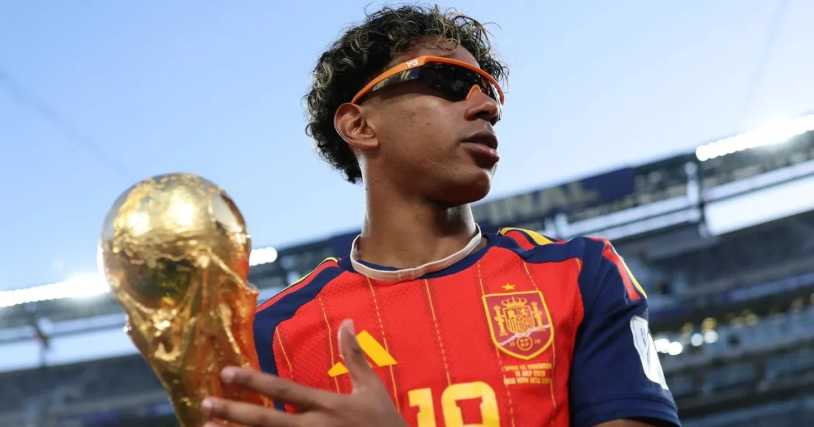

Security & Crime · 08 Nov 2026
FULL LIST: 20 youngest FIFA World Cup winners

Winning the FIFA World Cup is one of the greatest achievements in football, but doing so before turning 21 is a remarkable feat that places a player among an exclusive group of young champions. Read More: https://punchng.com/full-list-20-youngest-fifa-world-cup-winners/
Multiple independent publishers are reporting on the same development: FULL LIST: 20 youngest FIFA World Cup winners.
The available reports place the development in the Security & Crime category. The accounts were compared for agreement on the central event rather than simply shared names or broad topics.
One of the available reports describes the development this way: Winning the FIFA World Cup is one of the greatest achievements in football, but doing so before turning 21 is a remarkable feat that places a player among an exclusive group of young champions. Read More: https://punchng.com/full-list-20-youngest-fifa-world-cup-winners/
Readers should consult the linked source reports for additional context, updates and details that may change as the story develops.
Sources
This article was produced by the C. O. Eric AI Newsroom from the cited sources. It is published only after automated evidence and safety checks.